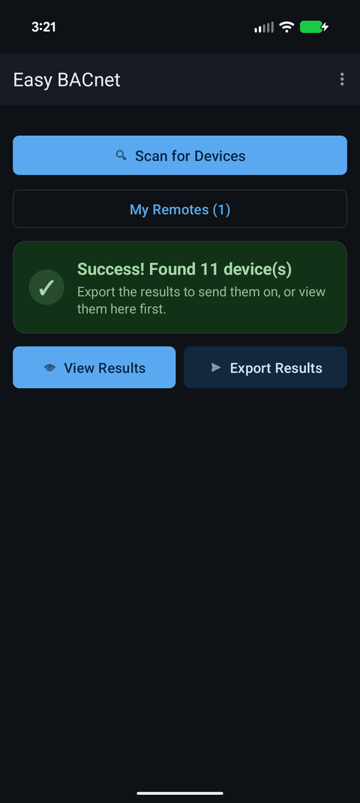
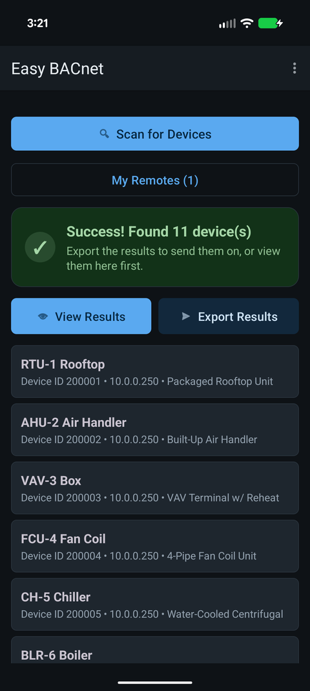

What are BACnet Who-Is and I-Am?
Updated 16 September 2026
Who-Is and I-Am are the two messages behind BACnet discovery. A tool broadcasts a Who-Is meaning “who is out there?”, and every device that hears it answers with an I-Am carrying its Device Instance number, the vendor, and what it can do. Collect the replies and you have a device list — which is exactly what Easy BACnet does when you tap Scan.


The exchange
A Who-Is is normally sent to the local broadcast address, so it reaches every device on the subnet at once. Each device replies with an I-Am. A Who-Is can be unconstrained (everybody answer) or constrained to a range of Device Instances, which is how a tool asks only for device 200001 without hearing from the whole building.
What an I-Am carries
- Device Instance — the device's unique number on the whole BACnet internetwork. If two devices share one, discovery gets unreliable: see BACnet Device IDs explained.
- Max APDU length and segmentation support — how big a message the device can handle, which decides how points are read.
- Vendor ID — who made it.
Why a scan sometimes finds nothing
Because Who-Is is a broadcast, and routers do not forward broadcasts, a device on a different IP subnet never hears it — unless a BBMD bridges the two. That is the single most common reason a scan comes back empty: see why can't I find my BACnet devices?. Devices on a serial MS/TP trunk answer too, as long as a router carries the traffic onto IP.